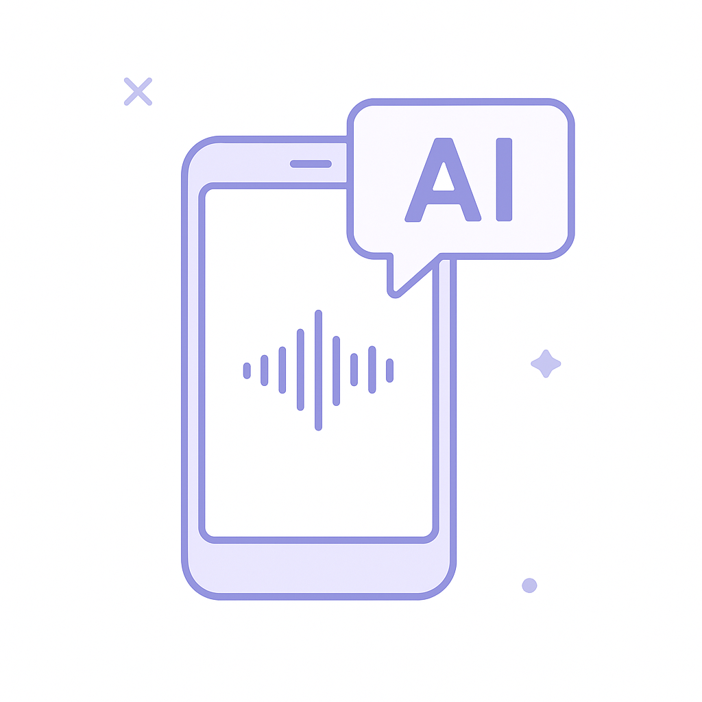
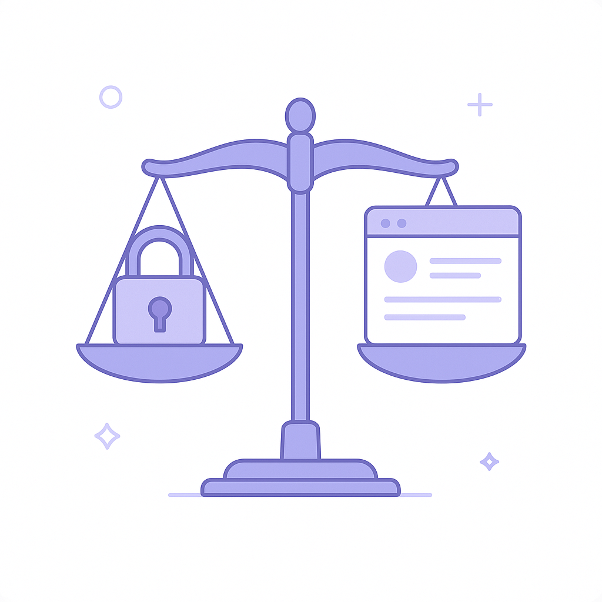

Publishing Recommendation
publishThe drafted posts effectively leverage current trends and align with Purands AI's brand voice, offering practical insights on AI applications in retention marketing and beyond.
Today's content effectively connects major industry trends to Purands AI's offerings, highlighting practical applications and insights. The posts maintain a clear focus on how AI can enhance customer engagement and business operations without overhyping capabilities. The tone is conversational and insightful, aligning well with our brand voice.
LinkedIn Posts (7)
1. AI Voice Startup ElevenLabs Valued at $22B ★ Purands solution · high priority
CTA: How are you integrating voice technology in your customer engagement strategies?

⬇ Download image
Image prompt · isometric-flat
Caption: AI-driven voice tech: more than just a trend.
Alternative hooks
- ElevenLabs just hit a $22 billion valuation.
- Is AI-driven voice tech the future of customer engagement?
- How does a $22B valuation change the game for voice technology?
Research behind this post (sources, summaries & confidence)
AI Voice Startup ElevenLabs Valued at $22B conf 0.80 · AI startups
ElevenLabs' rapid valuation growth underscores the increasing demand for AI-driven voice technology, which could transform customer engagement strategies in retention marketing, enabling more interactive and personalized communication channels.
Sources & what I took from each
- ElevenLabs valued at $22B.: Reported by TechCrunch, detailing the company's valuation growth. ↗ read source
- Investment co-led by Wellington and T. Rowe Price.: The TechCrunch article mentions the investors involved. ↗ read source
Recent news
- {'headline': 'ElevenLabs: The AI Voice Startup Reaching New Heights', 'source': 'TechCrunch', 'url': 'https://techcrunch.com/2026/09/30/ai-voice-startup-elevenlabs-doubles-valuation-to-22b/'}
Original trend links
Risks / caveats
- High valuations can lead to increased pressure for rapid growth.
2. Target Cuts Prices Amid Consumer Sentiment Drop ★ Purands solution · high priority
CTA: How does your brand approach pricing during economic shifts?
Alternative hooks
- Target has cut prices, but is it enough to keep customers engaged?
- Economic downturns test the mettle of pricing strategies. Here's how.
- When consumer sentiment drops, dynamic pricing becomes crucial.
Research behind this post (sources, summaries & confidence)
Target Cuts Prices Amid Consumer Sentiment Drop conf 0.75 · Retention marketing tactics
Target's price cuts in response to declining consumer sentiment highlight the importance of pricing strategies in retention marketing to maintain customer engagement and combat churn during economic downturns.
Sources & what I took from each
- Target cuts prices due to declining consumer sentiment.: Retail Dive reports on Target's pricing strategy adjustments. ↗ read source
Recent news
- {'headline': "Target's Price Strategy in Response to Economic Shifts", 'source': 'Retail Dive', 'url': 'https://www.retaildive.com/news/target-cuts-prices-consumer-sentiment-sours/831627/'}
Original trend links
Risks / caveats
- Price cuts may impact profit margins.
3. Walmart CEO Addresses Dynamic Pricing Concerns ★ Purands solution · high priority
CTA: How do you ensure pricing transparency in your business?
Alternative hooks
- Walmart's CEO just took a stand on dynamic pricing transparency.
- Is pricing fairness the missing link in customer loyalty?
- Transparent pricing isn't just ethical, it's strategic.
Research behind this post (sources, summaries & confidence)
Walmart CEO Addresses Dynamic Pricing Concerns conf 0.70 · CRM strategy
Walmart's focus on dynamic pricing concerns impacts CRM strategies as it affects customer loyalty and retention, emphasizing the need for transparent and fair pricing practices in retention marketing.
Sources & what I took from each
- Walmart CEO addresses dynamic pricing concerns.: Retail Dive article discusses the CEO's stance on pricing transparency. ↗ read source
Recent news
- {'headline': "Walmart's Approach to Dynamic Pricing Transparency", 'source': 'Retail Dive', 'url': 'https://www.retaildive.com/news/walmart-ceo-dynamic-pricing-concerns/831490/'}
Original trend links
Risks / caveats
- Consumers may react negatively to perceived pricing unfairness.
4. Flow Engineering AI Startup Backed at $750M Valuation
CTA: What are your thoughts on AI's role in hardware design? Share your insights.

Image prompt · isometric-flat
Caption: AI in hardware design: precision meets creativity.
Alternative hooks
- Flow Engineering just secured a $750M valuation. Here's why it matters.
- AI isn't just for software anymore. Meet Flow Engineering.
- Could AI agents redefine hardware design? Flow Engineering thinks so.
Research behind this post (sources, summaries & confidence)
Flow Engineering AI Startup Backed at $750M Valuation conf 0.90 · AI startups
Flow Engineering's significant backing highlights the growing interest in AI startups that focus on practical applications, like hardware design, which could be relevant for consumer brands in the retention marketing space seeking AI-driven product innovations.
Sources & what I took from each
- Flow Engineering valued at $750M.: Reported by TechCrunch with details of VC investments. ↗ read source
- Focus on AI agents for hardware design.: TechMeme mentions the startup's focus on hardware design. ↗ read source
Recent news
- {'headline': "Flow Engineering's $750M Valuation: A New Milestone for AI Startups", 'source': 'TechCrunch', 'url': 'https://techcrunch.com/2026/09/30/valor-atreides-and-sequoia-back-ai-startup-flow-engineering-at-750m-valuation/'}
Original trend links
- https://techcrunch.com/2026/09/30/valor-atreides-and-sequoia-back-ai-startup-flow-engineering-at-750m-valuation/
- https://www.techmeme.com/260930/p56#a260930p56
Risks / caveats
- High valuations can be volatile and do not guarantee success.
5. Google Announces Gemini 4 Argon AI Model
CTA: How do you think AI models like Gemini 4 Argon will change cybersecurity?
Alternative hooks
- The latest AI buzz is Google's Gemini 4 Argon model.
- Google's Gemini 4 Argon model is now hailed as their most powerful yet.
- Meet Gemini 4 Argon: Google's latest powerhouse AI model.
Research behind this post (sources, summaries & confidence)
Google Announces Gemini 4 Argon AI Model conf 0.80 · AI industry
Google's release of the Gemini 4 Argon model is significant for the AI industry, particularly for its applications in complex workflows relevant to cybersecurity and software engineering, which are critical areas for retention marketing platforms looking to enhance data security and operational efficiency.
Sources & what I took from each
- Google released the Gemini 4 Argon model.: Multiple reputable tech news sources report on the release. ↗ read source
- The model focuses on cybersecurity and software engineering applications.: The Verge article mentions the model's focus on 'trusted cyber defenders.' ↗ read source
Recent news
- {'headline': "Google's Gemini 4 Argon: A New Era for AI?", 'source': 'TechCrunch', 'url': 'https://techcrunch.com/2026/09/30/google-releases-gemini-4-argon-called-its-most-powerful-model-yet/'}
Original trend links
- https://techcrunch.com/2026/09/30/google-releases-gemini-4-argon-called-its-most-powerful-model-yet/
- https://www.theverge.com/tech/1002980/google-gemini-4-argon
- https://arstechnica.com/google/2026/09/google-announces-gemini-4-argon-ai-model-but-you-cant-use-it-yet/
Risks / caveats
- The model is not yet available for public use.
6. Best Buy Launches on TikTok Shop
CTA: What are your thoughts on integrating shopping with social media experiences?

Image prompt · isometric-flat
Caption: Social commerce: the new retail frontier.
Alternative hooks
- Best Buy's move to TikTok Shop isn't just a retail shift; it's a strategy evolution.
- Retailers are tapping into TikTok Shop. Here's why it matters.
- Social commerce isn't just a buzzword. Best Buy's TikTok launch proves it.
Research behind this post (sources, summaries & confidence)
Best Buy Launches on TikTok Shop conf 0.70 · WhatsApp commerce
The integration of major retailers like Best Buy into TikTok Shop indicates a shift towards social commerce platforms, which can enhance customer engagement and retention strategies, particularly through interactive and video-based marketing.
Sources & what I took from each
- Best Buy launches on TikTok Shop.: Reported by Retail Dive, confirming the launch. ↗ read source
Recent news
- {'headline': "Best Buy's New Venture: Selling on TikTok Shop", 'source': 'Retail Dive', 'url': 'https://www.retaildive.com/news/best-buy-tiktok-shop-launch/831527/'}
Original trend links
Risks / caveats
- Social commerce platforms can have volatile engagement rates.
7. Reddit Limits Access Due to AI Bots
CTA: How do you think companies can balance data integrity with user experience?

⬇ Download image
Image prompt · isometric-flat
Caption: Balancing user data integrity and experience.
Alternative hooks
- Remember the days when 'Old Reddit' was a go-to?
- Reddit is taking a stand against AI bots. Here's why.
- Why is Reddit cutting off access to 'Old Reddit'?
Research behind this post (sources, summaries & confidence)
Reddit Limits Access Due to AI Bots conf 0.60 · CRM strategy
Reddit's move to limit access to 'Old Reddit' due to AI bots reflects ongoing challenges in managing user data and interactions, relevant to CRM strategies that focus on data integrity and user experience, which are critical for retention marketing.
Sources & what I took from each
- Reddit limits access to Old Reddit due to AI bots.: Articles by Ars Technica and The Verge confirm Reddit's actions. ↗ read source
Recent news
- {'headline': 'Reddit Takes a Stand Against AI Bots', 'source': 'Ars Technica', 'url': 'https://arstechnica.com/gadgets/2026/09/reddit-will-block-old-reddit-com-from-people-who-havent-used-it-in-6-months/'}
Original trend links
- https://arstechnica.com/gadgets/2026/09/reddit-will-block-old-reddit-com-from-people-who-havent-used-it-in-6-months/
- https://www.theverge.com/tech/1002788/old-reddit-ai-scraping
Risks / caveats
- Restricting access could alienate some users.
Today's Trends
| # | Trend | Category | Why it matters |
|---|---|---|---|
| 1 | Google Announces Gemini 4 Argon AI Model
source source source |
AI industry | Google's release of the Gemini 4 Argon model is significant for the AI industry, particularly for its applications in complex workflows relevant to cybersecurity and software engineering, which are critical areas for retention marketing platforms looking to enhance data security and operational efficiency. |
| 2 | Flow Engineering AI Startup Backed at $750M Valuation
source source |
AI startups | Flow Engineering's significant backing highlights the growing interest in AI startups that focus on practical applications, like hardware design, which could be relevant for consumer brands in the retention marketing space seeking AI-driven product innovations. |
| 3 | AI Voice Startup ElevenLabs Valued at $22B
source |
AI startups | ElevenLabs' rapid valuation growth underscores the increasing demand for AI-driven voice technology, which could transform customer engagement strategies in retention marketing, enabling more interactive and personalized communication channels. |
| 4 | Best Buy Launches on TikTok Shop
source |
WhatsApp commerce | The integration of major retailers like Best Buy into TikTok Shop indicates a shift towards social commerce platforms, which can enhance customer engagement and retention strategies, particularly through interactive and video-based marketing. |
| 5 | Reddit Limits Access Due to AI Bots
source source |
CRM strategy | Reddit's move to limit access to 'Old Reddit' due to AI bots reflects ongoing challenges in managing user data and interactions, relevant to CRM strategies that focus on data integrity and user experience, which are critical for retention marketing. |
| 6 | Target Cuts Prices Amid Consumer Sentiment Drop
source |
Retention marketing tactics | Target's price cuts in response to declining consumer sentiment highlight the importance of pricing strategies in retention marketing to maintain customer engagement and combat churn during economic downturns. |
| 7 | Walmart CEO Addresses Dynamic Pricing Concerns
source |
CRM strategy | Walmart's focus on dynamic pricing concerns impacts CRM strategies as it affects customer loyalty and retention, emphasizing the need for transparent and fair pricing practices in retention marketing. |
Risk Assessment
No risks flagged.
Suggested LinkedIn Comments (30)
Open each post, then paste the copied comment. Nothing is posted automatically.
1. insight · rss:techcrunch.com — Google has released its latest Gemini model, marketing it as a workhorse for cod
Post by: rss:techcrunch.com
Why it works: It appreciates the specificity of the AI application and contrasts it with general AI hype.
↗ Open LinkedIn post to paste comment2. respectful challenge · rss:techcrunch.com — Defense Secretary Pete Hegseth just launched a 120-day study on the future of wa
Post by: rss:techcrunch.com
Why it works: It acknowledges the potential bias in the study and calls for transparent processes.
↗ Open LinkedIn post to paste comment3. insight · rss:techcrunch.com — Flow Engineering, which is bringing AI agents to hardware design, also landed Ro
Post by: rss:techcrunch.com
Why it works: The comment ties Botha's involvement to a broader trend in AI and hardware, offering a concrete example of impact.
↗ Open LinkedIn post to paste comment4. expansion · rss:techcrunch.com — VC Chris Degnan and former board adviser to Factory AI has taken a job as chief
Post by: rss:techcrunch.com
Why it works: It expands on the post by discussing the implications of such career moves in the industry.
↗ Open LinkedIn post to paste comment5. insight · rss:techcrunch.com — Spotify founder Daniel Ek’s Neko Health raised $700 million to build a business
Post by: rss:techcrunch.com
Why it works: The comment highlights the potential benefits of the investment trend, adding depth to the discussion.
↗ Open LinkedIn post to paste comment6. opinion · rss:techcrunch.com — The Department of Defense notified millions of current and former U.S. military
Post by: rss:techcrunch.com
Why it works: It emphasizes the importance of cybersecurity, tying it to real-world consequences and the need for action.
↗ Open LinkedIn post to paste comment7. insight · rss:techcrunch.com — DoorDash unveiled the six-propeller aircraft that will be used in its new drone
Post by: rss:techcrunch.com
Why it works: The comment looks ahead to potential impacts and challenges, broadening the scope of the post.
↗ Open LinkedIn post to paste comment8. opinion · rss:techcrunch.com — The new BMW 3 Series shows just how quickly EVs have caught up to fossil fuel ve
Post by: rss:techcrunch.com
Why it works: It captures the significance of pricing parity in driving the adoption of sustainable technology.
↗ Open LinkedIn post to paste comment9. insight · rss:techcrunch.com — OpenAI's "Decisions API" is a Jev clone that confirms the importance of fast, ch
Post by: rss:techcrunch.com
Why it works: The comment ties the API to broader business trends, adding context to its significance.
↗ Open LinkedIn post to paste comment10. insight · rss:techcrunch.com — The $300 million employee tender was co-led by Wellington and T. Rowe Price.
Post by: rss:techcrunch.com
Why it works: It ties the investment to its potential impact on the company's trajectory, offering a forward-looking perspective.
↗ Open LinkedIn post to paste comment11. insight · rss:www.theverge.com — It's a quirk of the release calendar that when Vivo's X Fold 6 launched in China
Post by: rss:www.theverge.com
Why it works: It offers a perspective on the trade-off between innovation and user familiarity, adding depth to the post's observation.
↗ Open LinkedIn post to paste comment12. expansion · rss:www.theverge.com — Grokipedia, SpaceXAI's AI-powered competitor to Wikipedia, recently started inco
Post by: rss:www.theverge.com
Why it works: It expands on the importance of user experience in platform design, complementing the post's focus on design updates.
↗ Open LinkedIn post to paste comment13. insight · rss:www.theverge.com — Paramount is appointing a new co-CEO ahead of the close of its $110 billion merg
Post by: rss:www.theverge.com
Why it works: It provides insight into the strategic reasoning behind leadership changes, adding depth to the post's information.
↗ Open LinkedIn post to paste comment14. respectful challenge · rss:www.theverge.com — A24 pissed off one of the internet's largest horror communities when it announce
Post by: rss:www.theverge.com
Why it works: It challenges the decision-making process behind the film adaptation, offering a constructive critique on missed collaboration.
↗ Open LinkedIn post to paste comment15. respectful challenge · rss:www.theverge.com — Google today revealed its next AI frontier model, which it's calling Gemini 4 Ar
Post by: rss:www.theverge.com
Why it works: It questions the strategy behind limited access, encouraging a broader consideration of the model's potential impact.
↗ Open LinkedIn post to paste comment16. insight · rss:www.theverge.com — While AI has made plenty of inroads on people's phones and computers, it's large
Post by: rss:www.theverge.com
Why it works: It provides a practical perspective on the criteria for successful AI hardware, adding value to the discussion.
↗ Open LinkedIn post to paste comment17. respectful challenge · rss:www.theverge.com — Reddit is further limiting who can use the "Old Reddit" experience as part of it
Post by: rss:www.theverge.com
Why it works: It challenges the decision with a focus on potential user backlash, providing a user-centric viewpoint.
↗ Open LinkedIn post to paste comment18. respectful challenge · rss:www.theverge.com — Amazon deliveries could soon come with a new catch: the delivery driver's smart
Post by: rss:www.theverge.com
Why it works: It respectfully challenges the privacy implications, emphasizing the importance of trust in tech deployment.
↗ Open LinkedIn post to paste comment19. opinion · rss:www.theverge.com — After hosting a meal with Big Tech leaders on Tuesday, President Donald Trump re
Post by: rss:www.theverge.com
Why it works: It offers a clear opinion on the importance of substance over rebranding, aligning with broader concerns about AI safety.
↗ Open LinkedIn post to paste comment20. respectful challenge · rss:www.theverge.com — This is Optimizer, a weekly newsletter sent from Verge senior reviewer Victoria
Post by: rss:www.theverge.com
Why it works: It challenges the balance between style and substance, adding a constructive perspective to the discussion on communication trends.
↗ Open LinkedIn post to paste comment21. insight · rss:feeds.arstechnica.com — Hot, nutrient water might have lasted for over 5 million years after the impact.
Post by: rss:feeds.arstechnica.com
Why it works: It connects the post's geological insight to broader implications for life sciences, adding depth to the discussion.
↗ Open LinkedIn post to paste comment22. insight · rss:feeds.arstechnica.com — State health officials race to vaccinate residents by giving over 8,500 doses.
Post by: rss:feeds.arstechnica.com
Why it works: The comment acknowledges the achievement while emphasizing the critical role of efficient systems in health management.
↗ Open LinkedIn post to paste comment23. opinion · rss:feeds.arstechnica.com — Reminder: The "border exemption" to your rights is real.
Post by: rss:feeds.arstechnica.com
Why it works: It offers a nuanced take on the post's topic, showing understanding of the delicate balance between security and privacy.
↗ Open LinkedIn post to paste comment24. insight · rss:feeds.arstechnica.com — It's possible to send electrical signals right through human tissues.
Post by: rss:feeds.arstechnica.com
Why it works: It highlights the innovation while also considering the ethical dimensions, adding depth to the conversation.
↗ Open LinkedIn post to paste comment25. insight · rss:feeds.arstechnica.com — A simple email gives the attackers the ability to remotely inject OS commands.
Post by: rss:feeds.arstechnica.com
Why it works: The comment emphasizes practical steps and the importance of human factors in cybersecurity, making it actionable.
↗ Open LinkedIn post to paste comment26. opinion · rss:feeds.arstechnica.com — So much for Gemini 3.5 Pro.
Post by: rss:feeds.arstechnica.com
Why it works: It uses the post's likely disappointment to make a broader point about the importance of delivering on promises in tech.
↗ Open LinkedIn post to paste comment27. insight · rss:feeds.arstechnica.com — Reddit says it's fighting "automated abuse."
Post by: rss:feeds.arstechnica.com
Why it works: The comment contextualizes Reddit's actions within a larger narrative of digital platform challenges, adding depth.
↗ Open LinkedIn post to paste comment28. opinion · rss:feeds.arstechnica.com — AI is far from a perfect resource. But it seems to hallucinate less than Kennedy
Post by: rss:feeds.arstechnica.com
Why it works: This perspective reinforces the idea of AI as an adjunct to human decision-making, aligning with realistic AI applications.
↗ Open LinkedIn post to paste comment29. insight · rss:feeds.arstechnica.com — Boycotting Disney is hard.
Post by: rss:feeds.arstechnica.com
Why it works: The comment acknowledges the difficulty of the action while providing a broader context about corporate influence.
↗ Open LinkedIn post to paste comment30. respectful challenge · rss:feeds.arstechnica.com — Trump gets dozens of AI firms to agree to voluntary safety tests.
Post by: rss:feeds.arstechnica.com
Why it works: The comment supports the initiative but points out the potential limitations, encouraging a deeper examination of the topic.
↗ Open LinkedIn post to paste comment